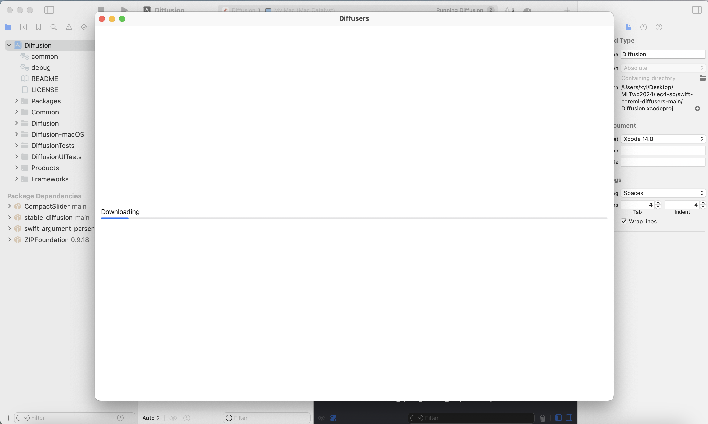
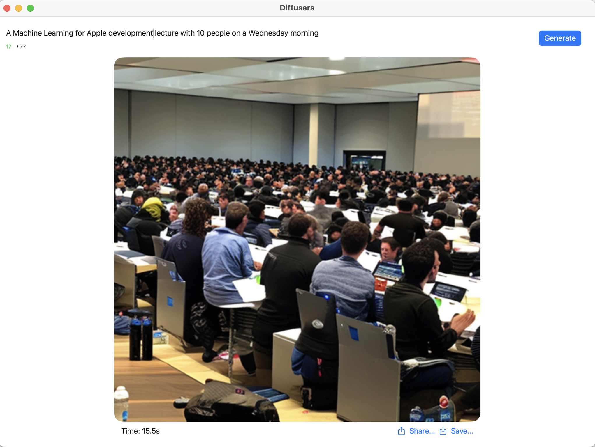

ML Two
Lecture 11
🤗Make Stable Diffusion models running on our Macbook!😎
+
AI applications in 3D modelling
Welcome 👩🎤🧑🎤👨🎤
Today:
1. A very gentle introduction to stable diffusion model.
2. Play with different versions of stable diffusion models on Hugging Face.
3. Three routes (out of many) to have a stable diffusion model running on your MacBook.
Stable diffusion:
- It is a text-to-image generative model.
- It is a
Latent Diffusion model developed by researchers from the Machine Vision and Learning group at LMU Munich, a.k.a CompVis.
- Its model checkpoints (the actual model files) were publicly released at the end of August 2022 by a collaboration of Stability AI, CompVis, and Runway with support from EleutherAI and LAION. For more information, you can check out the
official blog post.
Stable diffusion:
- Since its public release the community has done several iterations of modification/improvement
and there are different versions of stable diffusion models (
version list here).
- One common place to play with SD models is Hugging Face. They have computers storing the model files (quite large!) and running the actual computation for you.
- You can play with stable diffusion models
here.
🥲But sometimes their computers are busy and the queueing time can be long.
What can we do?
- Let's make stable diffusion models running locally on our machines and no queueing anymore yay!😎
🌶️Easy mode:
Download
this APP from APP Store and run.
-- 🫱Your turn🫲!
🌶️🌶️Normal mode:
- The APP from previous slide is actually open-source.
- We can download its source code from github
here and build this xcode project!
-- 🫱Your turn🫲!
-- Download the zip file from that Github repo (the green "Code" button), put it into your ML Two folder (or anywhere), and unzip.🤐
-- On first launch, it will automatically download a zipped archive with a Core ML version of Stability AI's Stable Diffusion v2 base from
here and it can take 10-20 minutes.
-- Once the download finishes, it is ready to play!😈

The downloading page (for downloading the model files) on first launch 🚀

What the app looks like running on Xiaowan's 2020 13-inch Macbook Pro M1, 16GB RAM, MacOS Ventura 13.6.1🧃
🌶️🌶️🌶️Hard mode:
- The open-source project from last slide uses a ready-for-Apple (aka the nice CoreML version) stable diffusion model.
- The teams behind stable diffusion models primarily release the model in the PyTorch🔥 format (named "checkpoint").
- To be able to run AI models natively in Apple ecosystem, we need the models in CoreML format (with an extension of ".mlmodelc").
🌶️🌶️🌶️Hard mode:
- The previous two approaches save us from the process of converting the model from Pytorch checkpoints to CoreML format.
- You can also find a list of already converted model files
here and use those model files in your app (like shown in
this project from GitHub).
🌶️🌶️🌶️🌶️Warrior mode:
- What if we want to use a customized stable diffusion model like this
anime pencil diffusion✍️🎨 ?
- Sadly there is no converted-to-coreml models available 😥
- Let's just convert the model into CoreML format ourselves:
-- We can convert the model following the official instructions
here.
-- As the process may slightly vary from machine to machine, we will provide individual support on your tour - find a stable diffusion model that you like and we will help you with the model converting process using your machine.✋🤓🤚
Next:
-- AI applications in 3D graphics ♨️
🥁Next lecture: in-person MOCK exam and technical support!